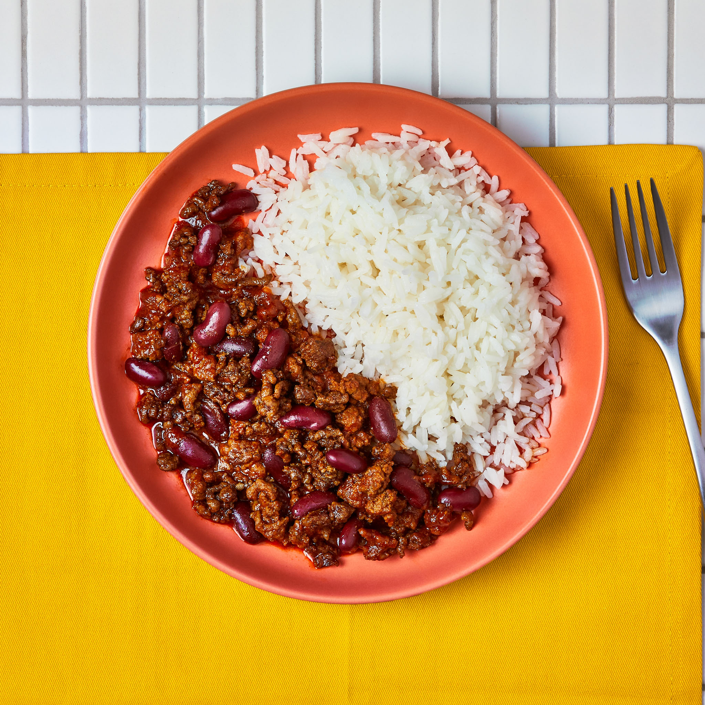

Chili Con Carne
Serves 4
| Preparation Time |
Cooking Time |
Cuisine |
30 Mins |
15 Mins |
Mexican |
Preparation Time: The time is takes to prepare and set the kitchen mise en place to begin cooking and is an estimate based on average home cooking skills
Cooking Time: The actual time it takes to cook the raw ingredients to be table ready!

Description
Tuck into this mid-week family favourite. You’ll simmer British beef mince and black beans with cumin and paprika in a rich tomato stock till gently bubbling. Serve over fluffy rice and dig in.
Ingredients
The below ingredients are divided into the different cooking stages to help you organise on your worktop
Preparation
- Beef stock - 5g
- Black beans - 390g (drained)
- Garlic clove - 4
- Ground cumin - 1 tsp
- Ground smoked paprika - 1 tsp
- Tomato paste - 32g
- White long grain rice - 100g
Garnish
- Spring onion
- Fresh chili
- Diced coriander
Cooking
- British beef mince - 200g
- 2 tablespoons of Canola or Sunflower oil
Instructions
The steps are divided into the preparation stage and cooking stage as you will find in real kitchens. First you set the mise en place with all of your ingredients ready to cook and any garnishes. Then you will start the second stage of cooking. This keeps the process orderly and avoid multitasking. The preparation stage includes some cooking of starches that require only time and no continuous monitoring or agitation.
Preparation
- Cook your rice
- Peel and finely chop your garlic
- Combine your chopped garlic, cumin and paprika in a small bowl and set aside
- Drain and rinse your black beans and set aside
- Create your tomato stock by dissolving your tomato paste and stock cube in 400ml of boiling water, stir with a spoon and set aside
- Once rice has cooked, remove from heat, fluff with a fork and vent
- Gather your garnish ingredients, chop them and put them in separate bowls and put on the serving place
- All ingredients are now prepped, starch is cooked, ready to move onto the cooking phase
Cooking
These are the items you'll need when you get to the cooking stage of the recipe
- Add the oil to a hot saucepan
- Fry the beef mince
- Once brown, add your bowl of garlic and spices and fry for 30 seconds
- Add the tomato stock and reduce the heat. Simmer until sauce has thickened to your liking
- Once sauce has thickened, remove from heat and service with your cooked rice and top with your garnishes
Home